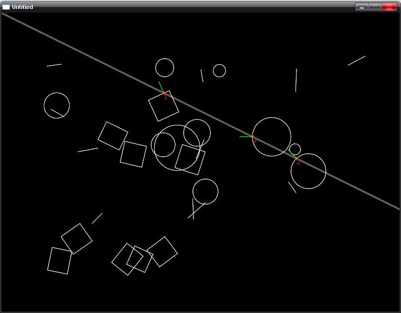

World:rayCast
From LOVE
| Available since LÖVE 0.8.0 |
| This method is not supported in earlier versions. |
Casts a ray and calls a function for each fixture it intersects.
Function
Synopsis
World:rayCast( x1, y1, x2, y2, callback )
Arguments
number x1- The x position of the starting point of the ray.
number y1- The y position of the starting point of the ray.
number x2- The x position of the end point of the ray.
number y2- The y position of the end point of the ray.
function callback- A function called for each fixture intersected by the ray. The function gets six arguments and should return a number as a control value. The intersection points fed into the function will be in an arbitrary order. If you wish to find the closest point of intersection, you'll need to do that yourself within the function. The easiest way to do that is by using the fraction value.
Returns
Nothing.
Callback
Synopsis
control = callback( fixture, x, y, xn, yn, fraction )
Arguments
Fixture fixture- The fixture intersecting the ray.
number x- The x position of the intersection point.
number y- The y position of the intersection point.
number xn- The x value of the surface normal vector of the shape edge.
number yn- The y value of the surface normal vector of the shape edge.
number fraction- The position of the intersection on the ray as a number from 0 to 1 (or even higher if the ray length was changed with the return value).
Returns
number control- The ray can be controlled with the return value. A positive value sets a new ray length where 1 is the default value. A value of 0 terminates the ray. If the callback function returns -1, the intersection gets ignored as if it didn't happen.
Notes
There is a bug in LÖVE 0.8.0 where the normal vector passed to the callback function gets scaled by love.physics.getMeter.
Examples
Casting a ray over some random shapes.
function worldRayCastCallback(fixture, x, y, xn, yn, fraction)
local hit = {}
hit.fixture = fixture
hit.x, hit.y = x, y
hit.xn, hit.yn = xn, yn
hit.fraction = fraction
table.insert(Ray.hitList, hit)
return 1 -- Continues with ray cast through all shapes.
end
function createStuff()
-- Cleaning up the previous stuff.
for i = #Terrain.Stuff, 1, -1 do
Terrain.Stuff[i].Fixture:destroy()
Terrain.Stuff[i] = nil
end
-- Generates some random shapes.
for i = 1, 30 do
local p = {}
p.x, p.y = math.random(100, 700), math.random(100, 500)
local shapetype = math.random(3)
if shapetype == 1 then
local w, h, r = math.random() * 10 + 40, math.random() * 10 + 40, math.random() * math.pi * 2
p.Shape = love.physics.newRectangleShape(p.x, p.y, w, h, r)
elseif shapetype == 2 then
local a = math.random() * math.pi * 2
local x2, y2 = p.x + math.cos(a) * (math.random() * 30 + 20), p.y + math.sin(a) * (math.random() * 30 + 20)
p.Shape = love.physics.newEdgeShape(p.x, p.y, x2, y2)
else
local r = math.random() * 40 + 10
p.Shape = love.physics.newCircleShape(p.x, p.y, r)
end
p.Fixture = love.physics.newFixture(Terrain.Body, p.Shape)
Terrain.Stuff[i] = p
end
end
function love.keypressed()
createStuff()
end
function love.load()
-- Setting this to 1 to avoid all current scaling bugs.
love.physics.setMeter(1)
-- Start out with the same random stuff each start.
math.randomseed(0xfacef00d)
World = love.physics.newWorld()
Terrain = {}
Terrain.Body = love.physics.newBody(World, 0, 0, "static")
Terrain.Stuff = {}
createStuff()
Ray = {
x1 = 0,
y1 = 0,
x2 = 0,
y2 = 0,
hitList = {}
}
end
function love.update(dt)
local now = love.timer.getTime()
World:update(dt)
-- Clear fixture hit list.
Ray.hitList = {}
-- Calculate ray position.
local pos = (math.sin(now/4) + 1.2) * 0.4
Ray.x2, Ray.y2 = math.cos(pos * (math.pi/2)) * 1000, math.sin(pos * (math.pi/2)) * 1000
-- Cast the ray and populate the hitList table.
World:rayCast(Ray.x1, Ray.y1, Ray.x2, Ray.y2, worldRayCastCallback)
end
function love.draw()
-- Drawing the terrain.
love.graphics.setColor(1, 1, 1)
for i, v in ipairs(Terrain.Stuff) do
if v.Shape:getType() == "polygon" then
love.graphics.polygon("line", Terrain.Body:getWorldPoints( v.Shape:getPoints() ))
elseif v.Shape:getType() == "edge" then
love.graphics.line(Terrain.Body:getWorldPoints( v.Shape:getPoints() ))
else
local x, y = Terrain.Body:getWorldPoints(v.x, v.y)
love.graphics.circle("line", x, y, v.Shape:getRadius())
end
end
-- Drawing the ray.
love.graphics.setLineWidth(3)
love.graphics.setColor(1, 1, 1, .4)
love.graphics.line(Ray.x1, Ray.y1, Ray.x2, Ray.y2)
love.graphics.setLineWidth(1)
-- Drawing the intersection points and normal vectors if there were any.
for i, hit in ipairs(Ray.hitList) do
love.graphics.setColor(1, 0, 0)
love.graphics.print(i, hit.x, hit.y) -- Prints the hit order besides the point.
love.graphics.circle("line", hit.x, hit.y, 3)
love.graphics.setColor(0, 1, 0)
love.graphics.line(hit.x, hit.y, hit.x + hit.xn * 25, hit.y + hit.yn * 25)
end
end


See Also
Other Languages
English
More info
Categories: